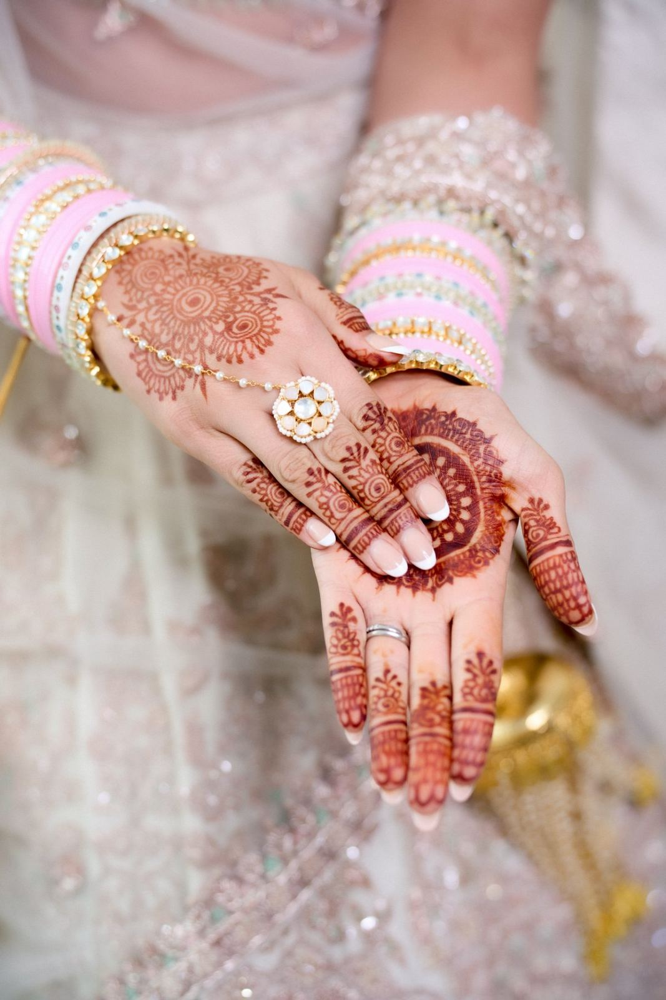

An Anand Karaj does not need hundreds of guests to feel complete. In fact, some of the most moving Sikh weddings we photograph are the quiet ones — a small sangat, the Guru Granth Sahib Ji at the centre, and a couple circling the Guru with only their closest people watching.
Intimate weddings are one of the biggest UK trends of 2026, and Sikh couples are embracing them without giving up a single tradition. If you are planning a small gurdwara wedding in London, here is how to do it beautifully and respectfully. This guide sits alongside our wider piece on intimate Asian weddings in London.
Why a small Anand Karaj works so well
The Anand Karaj is, at its heart, an intimate act. The four lavaan, the hukamnama, the ardas — none of it depends on scale. Keeping the sangat small simply removes the noise around it. Couples tell us they could actually hear the ragis, feel the weight of each lavaan, and stay present rather than performing for a crowd.
Choosing your gurdwara
London and the surrounding areas have many gurdwaras, from the vast to the wonderfully local. For a small wedding, consider:
- Smaller neighbourhood gurdwaras, where a modest sangat fills the darbar sahib and the atmosphere feels warm rather than sparse.
- Weekday mornings, which are quieter, easier to book, and often more peaceful for photography.
- Your family gurdwara, where the sewadars know your family and the day carries extra meaning.
Always speak with the gurdwara committee early about their guidelines — timings, langar arrangements, and what is permitted during the ceremony.

Anand Karaj etiquette every couple should protect
A small wedding is still a religious ceremony in the presence of the Guru Granth Sahib Ji. A few essentials to brief your guests and suppliers on:
- Heads must be covered and shoes removed before entering the darbar sahib.
- Everyone sits on the floor; feet should never point towards the Guru Granth Sahib Ji.
- No alcohol, meat, or tobacco anywhere on gurdwara premises.
- Photographers work discreetly and follow the sewadars' guidance on where they may stand or move.
Seva — the spirit of selfless service — sits beautifully in an intimate wedding. With fewer guests, families often take a more hands-on role in the langar, which adds a deeply personal layer to the day.
A simple timeline for an intimate gurdwara wedding
- Arrival and milni — the two families meet outside; intimate, so it is unhurried and genuinely warm.
- Tea and shabad kirtan — guests settle into the darbar sahib.
- Anand Karaj — the four lavaan, with the couple circling the Guru Granth Sahib Ji.
- Ardas and hukamnama — the concluding prayers.
- Langar — a shared meal, often the most joyful and relaxed part of a small wedding.
Photographing an intimate Anand Karaj
In a small gurdwara wedding, the photographer disappears — and what is left is the ceremony exactly as it happened.
With fewer people, there is space to work quietly and reverently from the right angles without ever intruding on the sangat. The lavaan can be covered fully, the emotion on parents' faces is easy to reach, and there is room for meaningful portraits afterwards without a crowd waiting. You can read more about how we approach ceremonies of every size on our wedding photography page, and many couples pair an intimate Anand Karaj with a relaxed pre-wedding shoot.
Frequently asked questions
Can you have a small Anand Karaj with just close family?
Absolutely. The Anand Karaj ceremony is complete with a small sangat — the four lavaan, hukamnama and ardas do not depend on the number of guests. Many couples now choose an intimate ceremony with only close family and friends present.
What etiquette applies at a gurdwara wedding?
Heads must be covered and shoes removed, everyone sits on the floor without pointing their feet towards the Guru Granth Sahib Ji, and no alcohol, meat or tobacco is permitted on the premises. Photographers work discreetly under the sewadars' guidance.
When is the best time to book a gurdwara for a quiet wedding?
Weekday mornings are usually the quietest and easiest to book, and they tend to give the most peaceful atmosphere for an intimate Anand Karaj and its photography.